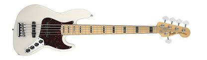
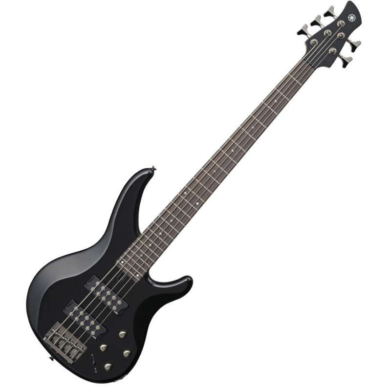
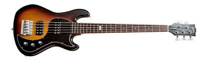

Fender es mundialmente conocida por sus modelos clásicos, tanto de guitarra como de bajo. Sus bajos clásicos tienen cuatro o cinco cuerdas y pastillas pasivas o activas.
Las líneas Jazz y Precision Bass son algunas de las más destacadas, adoptadas por varios artistas. Versátil, los modelos Fender se adaptan a estilos que van desde el rock hasta el jazz, pasando por el pop romántico.

Yamaha

Yamahaes conocida en el negocio de la música no solo por sus bajos, sino también por sus teclados y flautas. El bajo de la marca era conocido por su diseño económico, durabilidad y rentabilidad, ideal para principiantes.
Gibson

El aspecto audaz y el sonido más completo hicieron que Gibson llegara a los músicos que desean una mayor carga de graves. Como resultado, está presente en producciones de rock, soul, fusión, jazz y reggae, que no necesitan sonidos más agudos.
Aqui unos ejemplos en canciones de donde se han utilizado estos bajos